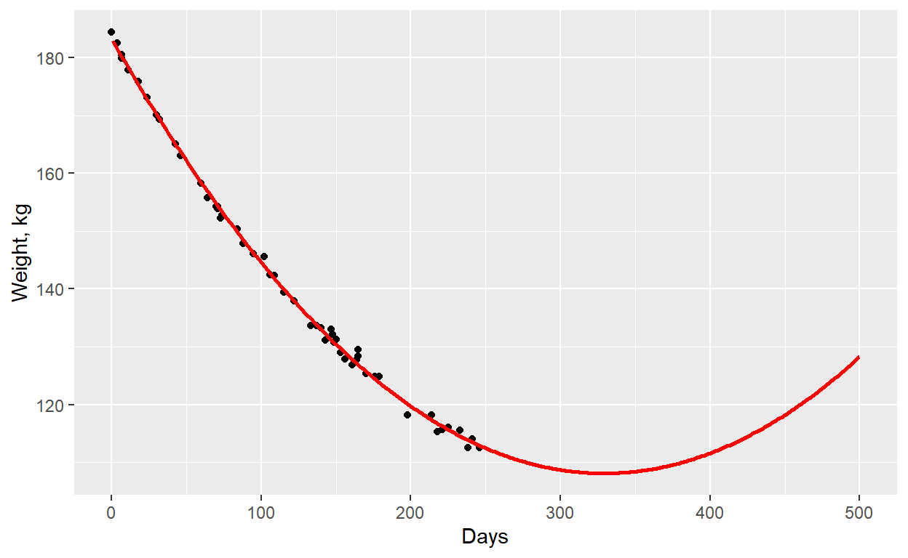
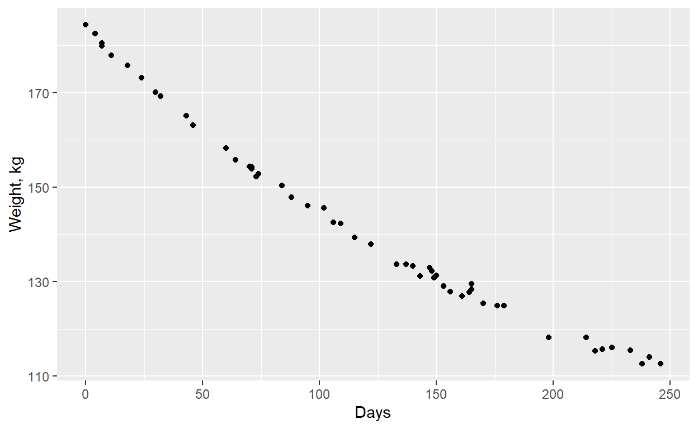
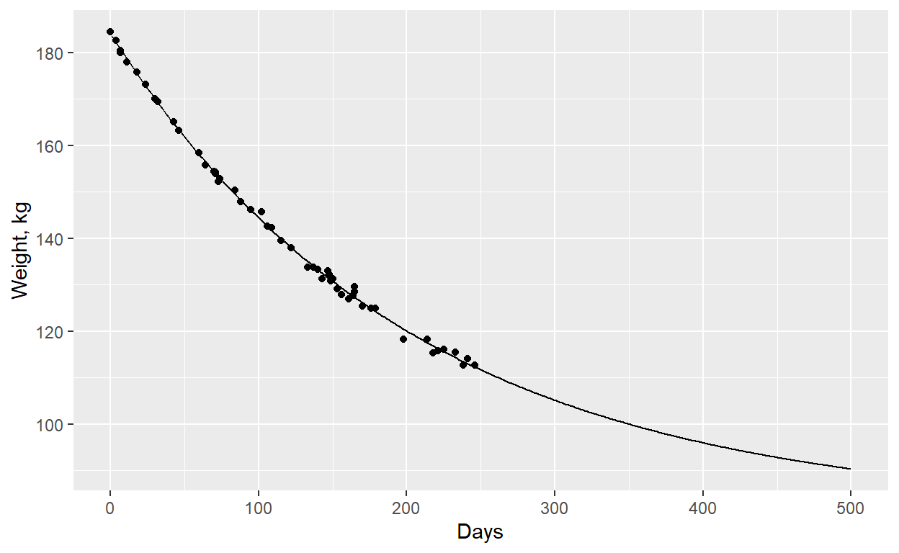

Assumptions of Least Squares Regression
- The relationship between the response and the predictors is ~linear.
- The residuals have a mean of zero.
- The residuals have constant variance (not heteroscedastic).
- The residuals are independent (uncorrelated).
- The residuals are normally distributed.
Nonlinear least squares can be used when relationship is non-linear.
Linear model all parameters \(\beta\) added together
\(y = \beta_0 + \beta_1x + \beta_2z\)
Non-linear model are more general
\(y = \beta_0 +\beta_1e^{-\beta_3x}\) exponential decline
\(y = \frac{\beta_0x}{\beta_1 + x}\) Michaelis-Menten
\(y = \beta_0sine(\beta_1+\beta_2x)\) Sine wave
Exponential decline
We want to model the weight loss of a patient on a diet in the dataset ´wtloss´ from the MASS package.
wtlosswtloss_plot <- ggplot(wtloss, aes(x = Days, y = Weight)) +
geom_point() +
labs(y = "Weight, kg")
wtloss_plot
There are three methods that might be useful.
Polynomials
Obviously a straight line is not going to fit these data well. How about a quadratic? This will fit a curve but is still a linear model.
We can fit a quadratic model in two ways, as shown below. poly uses orthogonal polynomials, removing the colinearity between the polynomials which can make a model unstable.
#quadratic model
#mod_qu <- lm(Weight ~ Days + I(Days^2), data = wtloss)
mod_qu <- lm(Weight ~ poly(Days, 2), data = wtloss)
# summary of output with broom::glance
glance(mod_qu)# made predictions with broom::augment
pred_qu <- augment(mod_qu, newdata = data.frame(Days = 1:500))
wtloss_plot +
geom_line(mapping = aes(y = .fitted), data = pred_qu, colour = "red", size = 1)
This model has a good fit the the data, but the predictions are physically implausible with the patients weight increasing again even though they remain on the diet.
We need a more realistic model.
Data transformations
Sometimes it appears that transforming the response variable (for example with a log transform) may be solution. Avoid doing this. A log transform assumes that error is a constant proportion of the response, whereas in this case the error is probably constant.
A non-linear model
Often we know what form the model should take, and can then fit a model with meaningful parameters.
Here the response seems to follow an exponential decline. Initially the weight loss is rapid, slowing as it approaches a new equilibrium - the asymptope.
We can model an exponential decline as
\[y_i = \beta_0 + (\beta_1 - \beta_0) e^{\beta_2x_i} + \epsilon_i\]
where \(e\) is the exponential function exp(). This parameratisation of the model may seem somewhat strange but it make the parameters more interpretable.
How can we interpret these parameters?
It helps to consider that happens when \(x = 0\) and then \(x\) grows very large (when the asymptope will almost be reached).
When \(x = 0\), \(\beta_2x = 0\) and \(exp({\beta_2x}) = 1\), leaving, \(y = \beta_0 + (\beta_1 - \beta_0)\). The \(\beta_0\) cancel, leaving \(y = \beta_1\) so \(\beta_1\) is the intercept.
When \(x\) is very large, \(exp({\beta_2x}) = 0\) if \(\beta_2 < 0\), so \(y = \beta_0\) is the asymptope.
\(\beta_2\) is linked to \(x\) so is related to the slope. It is the proportional change in the response. It can be estimated by finding the difference in the response for a small change in the predictor. This can be done most easily for the difference between response from \(x = 0\) (intercept) to \(x = 1\).
When x = 0, y = b1
when x = 1, y = b0 + (b1 - b0)exp(b2 * 1)
change = delta
(b0 + (b1 - b0)exp(b2 * 1)) - b1 = delta
rearrange
(b1 - b0) exp(b2) = b1 - b0 + delta
exp(b2) = (b1 - b0 + delta) / (b1 - b0)
b2 = log((b1 - b0 + delta) / (b1 - b0))Task
From the graph, estimate values for the coefficients
wtloss_plot
b0 =
b1 =
b2 = b0 = 80 # asymptote, harder to estimate
b1 = 185 # intercept
delta = -1 # going down - approx change
b2 = log((b1 - b0 + delta) / (b1 - b0))
b2Fitting the model
Using nls
We can use the function nls from the nlme package to fit a non-linear model.
There are some important differences from lm.
With lm, we would write a formula as y ~ x and this would be interpreted as \(y = \beta_0 + \beta_1x\). With nls we need to explicitly give the coefficients. So the formula for the model could be written as
nls(Weight ~ b0 + (b1 - b0) * exp(-b3 * Days), The second different is that lm can estimate the coefficients algebraically, ´nls´ has to search for them. To help it search, it needs some starting values that are somewhere near the correct values. We can supply the starting values via the start argument.
We can make estimates for the asymptote \(\beta_0\) and the intercept \(\beta_1\) from the graph. The calculation for \(\beta_2\) is a little more involved.
mod_nls <- nls(Weight ~ b0 + (b1 - b0) * exp(b2 * Days),
data = wtloss,
start = c(b0 = 80, b1 = 180, b2 = -0.01))
summary(mod_nls)##
## Formula: Weight ~ b0 + (b1 - b0) * exp(b2 * Days)
##
## Parameters:
## Estimate Std. Error t value Pr(>|t|)
## b0 8.137e+01 2.269e+00 35.86 <2e-16 ***
## b1 1.841e+02 3.705e-01 496.77 <2e-16 ***
## b2 -4.884e-03 1.822e-04 -26.80 <2e-16 ***
## ---
## Signif. codes: 0 '***' 0.001 '**' 0.01 '*' 0.05 '.' 0.1 ' ' 1
##
## Residual standard error: 0.8949 on 49 degrees of freedom
##
## Number of iterations to convergence: 4
## Achieved convergence tolerance: 8.107e-06Now we can plot the predictions from the model, again using broom::augument to make the predictions.
pred_nls <- augment(mod_nls, newdata = data.frame(Days = 1:500))
wtloss_plot +
geom_line(aes(y = .fitted), data = pred_nls)
If the starting values are badly chosen, the model may fail to converge (find the best value for the coefficients), or worse. Different starting values can lead to slightly different solutions.
Task
Change the value of b2 and observe any error messages and use google to try to understand what they mean.
nls(Weight ~ b0 + (b1 - b0) * exp(b2 * Days),
data = wtloss,
start = c(b0 = 80, b1 = 180, b2 = -0.1))Task
Dataset CO2 shows how the uptake of CO2 by plants varies with CO[2] concentration. Use filter to extract the data on the first plant (“Qn1”). Plot the data for the first plant, and estimate starting values for the coefficients.
Qn1 <- CO2 %>% filter()Qn1 <- CO2 %>% filter(Plant == "Qn1")
Qn1
Qn1_plot <- ggplot(Qn1, aes(x = conc, y = uptake)) +
geom_point() +
labs(x = expression(CO[2]~concentration~mL*L^-1), #expressions for notation
y = expression(CO[2]~Uptake~mu*mol~m^-2*s^-1)) +
xlim(0, NA) # set x limits to show intercept
Qn1_plot
b0 = 40#asymptote
b1 = -40#intercept
delta = .2
b2 = log((b1 - b0 + delta) / (b1 - b0))
b2Task
Use the starting values to fit an nls model to the plant data. When you have fitted a model, make predictions for concentrations between 0 and 1000 mL/L and add these to the plot.
Qn1 <- CO2 %>% filter(Plant == "Qn1")
Qn1
Qn1_plot <- ggplot(Qn1, aes(x = conc, y = uptake)) +
geom_point() +
labs(x = expression(CO[2]~concentration~mL*L^-1), #expressions for notation
y = expression(CO[2]~Uptake~mu*mol~m^-2*s^-1)) +
xlim(0, NA) # set x limits to show intercept
b0 = 40#asymptote
b1 = -40#intercept
delta = .2
b2 = log((b1 - b0 + delta) / (b1 - b0))
b2
co2_nls <- nls()
co2_nls
co2_pred <- augment()
Qn1_plot +
geom_line(data = co2_pred, aes(y = .fitted))Qn1 <- CO2 %>% filter(Plant == "Qn1")
Qn1
Qn1_plot <- ggplot(Qn1, aes(x = conc, y = uptake)) +
geom_point() +
labs(x = expression(CO[2]~concentration~mL*L^-1), #expressions for notation
y = expression(CO[2]~Uptake~mu*mol~m^-2*s^-1)) +
xlim(0, NA) # set x limits to show intercept
Qn1_plot
b0 = 40#asymptote
b1 = -40#intercept
delta = .2
b2 = log((b1 - b0 + delta) / (b1 - b0))
b2
co2_nls <- nls(uptake ~ b0 + (b1 - b0) * exp(b2*conc),
data = Qn1,
start = c(b0 = b0, b1 = b1, b2 = b2))
co2_nls
co2_pred <- augment(co2_nls, newdata = data.frame(conc = 0:1000))
Qn1_plot +
geom_line(data = co2_pred, aes(y = .fitted))Self-starting NLS models
Having to estimate starting values for the coefficients is a nuisance. Fortunately, some models have a selfstart function which can estimate the coefficients. These all have names beginning SS
For the exponential decline model fitted about, we need SSasymp which fits a model with an asymptote. The paramatarisation in SSasymp is slightly different from that shown above. It is \(y = \beta_0 + (\beta_1 - \beta_0)e^{-e^{\beta_3}x}\)
The function SSasymp takes four arguments. The first is the predictor variable, the other three are the names of the coefficients (without quotes). It is conventional to use Asym for the asymptote, RO for the intercept and lrc for the effect.
mod_nls2 <- nls(Weight ~ SSasymp(Days, Asym, R0, lrc), data = wtloss)
mod_nls2## Nonlinear regression model
## model: Weight ~ SSasymp(Days, Asym, R0, lrc)
## data: wtloss
## Asym R0 lrc
## 81.374 184.058 -5.322
## residual sum-of-squares: 39.24
##
## Number of iterations to convergence: 2
## Achieved convergence tolerance: 1.879e-07Asym and R0 are the same as b0 and b1 in the previous model. b2 is the negative of the exponent of (lrc). The fitted values (and predictions) will be the same.
Task
Use a selfstarting model to fit an nls model to the CO[2] uptake data.
Qn1 <- CO2 %>% filter(Plant == "Qn1")
co2_nls <- nls()
co2_nlsQn1 <- CO2 %>% filter(Plant == "Qn1")
co2_nls2 <- nls(uptake ~ SSasymp(conc, Asym, R0, irc), data = Qn1)
co2_nls2Check the estimates for the intercept and asymptote are similar to what you obtained before.
Summary
- Is there a natural expression
- Identify parameters
- Roughly estimate parameters
- Start NLS
- Use a selfstarting model if available
Further reading
Ritz & Streibig(2008) Nonlinear Regression with R, Springer